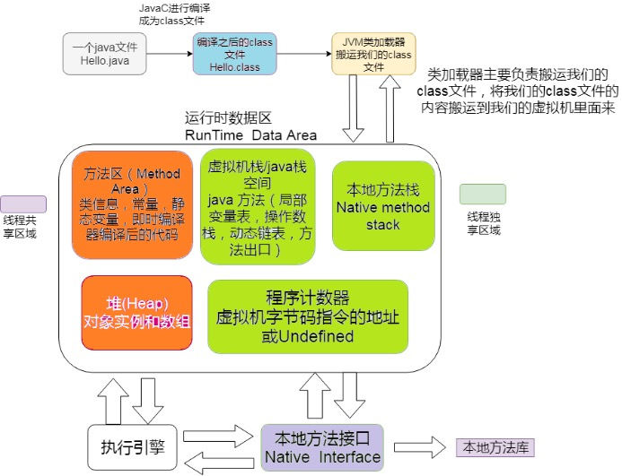
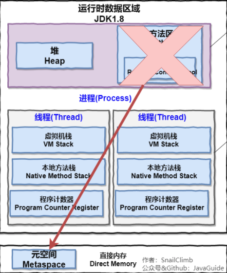

引言
名词是对客观事物的指代，形容词是对客观事物的描述。
进程和线程又分别是什么? 进程和线程区别到底是什么?
带着简单的疑问，我们慢慢往下看看，本文不会过多章节去分析代码，而是比较多去谈自己的理解！
计算机扩展概念
其实无论是谈生意也好，还是谈工作也好，首先必须要解决一个问题，就是明确主题和双方信息差的问题！
为了更好的理解，我们需要了解一些基础的计算机知识(linux)。具体文献请参考原文
CPU
A CPU contains three main sections: (1) an arithmetic/logic unit, (2) a control unit and (3) registers. The arithmetic/logic unit contains circuitry that performs data manipulation. The control unit consists of circuitry for coordinating the machine’s activities. The registers are high speed memory cells that are used for holding instructions for data that is currently being processed.
CPU 包含三个主要部分：(1)算术/逻辑单元，(2)控制单元和 (3)寄存器。
算术/逻辑单元包含执行数据操作的电路。
控制单元由用于协调机器活动的电路组成。
寄存器是高速存储单元，用于保存当前正在处理的数据的指令。
Register Definition — 寄存器
A register is a very small amount of very fast memory that is built into the CPU (central processing unit) in order to speed up its operations by providing quick access to commonly used values.
寄存器是非常快又微型的存储器内置于Cpu，是通过访问快速提供的值,已加快Cpu(中央处理单元)的操作
作用:寄存器是高速存储单元，用于保存当前正在处理的数据的指令。
专用寄存器存储内部 CPU 数据，例如程序计数器（也称为指令指针）、堆栈指针和状态寄存器。
寄存器概念扩展
寄存器是存储器层次结构的顶部，是系统操作数据的最快方式。
在它们下面是几个级别的高速缓存，至少其中一些也内置在 CPU 中，而其中一些可能在其他专用芯片上。高速缓存比寄存器慢，但要丰富得多。在不同级别的高速缓存之下是主存储器，它更慢但更丰富（例如，与只有 32 个寄存器相比，数百兆字节）。但反过来，它仍然比存储设备和媒体（例如，硬盘驱动器和 CDROM）快得多，容量也小得多。
其他作用
指令寄存器保存CPU正在执行的指令。
地址寄存器保存内存地址，用于访问内存。
数据寄存器用于存储整数。
进程和线程
进程是操作系统分配资源的最小单位,线程是调度的基本单位,线程之间共享进程资源。
概念
其实就这么简单的一句话，就可以引申出很多概念。
逆向思维(反推)，从已有的结果出发挖掘更多的可能性.
到底线程之间共享了哪些进程资源？
共享资源意味着什么？
共享资源这种机制是如何实现的？
线程有哪些是线程私有的
线程
线程运行的本质就是函数。
函数的执行总会有一个源头，这个源头就是所谓的入口函数，相当于java的main的函数，CPU 从入口函数开始执行从而形成一个执行流，只不过我们人为的给执行流起一个名字，这个名字就叫线程。
线程私有
凡事从本质出发，我们就要去分析函数包含了些哪些信息。线程之间既然共享了进程资源，那就会对应不共享的资源，也就是线程私有资源
函数运行时的信息包含了栈帧中，栈帧中保存了函数的返回值，调用其他函数的参数，局部变量，该函数的寄存器初始值。

这里延伸出一个问题，因为线程是可以被操作系统随时暂停运行的和恢复运行的，那是怎么做到的？
可以通过保存以及恢复程序计数器的值就可以知道线程的从哪里运行又从哪里开始。
由于每个线程的本质都是函数的运行，函数运行时的信息是保存在栈中的，因此每个线程都有对应自己独立，私有的栈区

同时像函数的局部变量也是存放到寄存器之中，运行完就释放掉，回收内存。
所属线程的栈区，程序计数器，栈指针以及函数运行使用的寄存器都是线程私有的。
线程间的共享
代码区
编译后的可执行机器指令,从可执行文件中加载到内存的，可执行程序中的代码区就是用来初始化进程地址空间中的代码区的。
数据区
进程地址空间中的数据区，这里存放的就是所谓的全局变量。
全局变量简单的理解，一般不会被系统回收的变量，即使函数执行完后该变量依然存在，对于其他线程也是可见的
堆区
对象存放的地址空间，可被GC。
变量的地址，也就是指针。
任何一个线程都可以访问指针指向的数据，因此堆区也是线程共享的属于进程的资源。
栈区
因为线程不像进程，进程是互相隔离，且独立。
如果一个线程能拿到来自另一个线程栈帧上的指针，那么该线程就可以改变另一个线程的栈区，也就是说这些线程可以任意修改本属于另一个线程栈区中的变量。
一个线程的栈区对其它线程是可以见的，也就是说我们可以修改属于任何一个线程的栈区
文件
如果程序在运行过程中打开了一些文件，那么进程地址空间中还保存有打开的文件信息，进程打开的文件也可以被所有的线程使用，这也属于线程间的共享资源。
如图
线程共享的地址，除了线程上下文的信息
对于这个地方，我们引入java虚拟机
如图

这里再扩展一下,jdk.1.8.0其实以及取消了方法区,与之对于的是元空间
- 以下jdk1.8 的标准（）
- 移除了永久代（PermGen），替换为元空间（Metaspace）；
- 永久代中的 class metadata 转移到了 native memory（本地内存，而不是虚拟机）；
- 永久代中的 interned Strings 和 class static variables 转移到了 Java heap；
永久代参数 （PermSize MaxPermSize） -> 元空间参数（MetaspaceSize MaxMetaspaceSize）

其实以下的概念我们都在上文讲过:
java线程私有：
程序计数器
• 程序计数器：
1. 每一个线程都需要有独立的计数器，各个线程互不干扰，独立存储
2. 字节码解释器通过改变程序计数器来依次读取指令，从而实现代码的流程控制
3. 在多线程的情况下，程序计数器用于记录当前线程执行的位置，从而当线程被切换回来的时候能够知道该线程上次运行到哪儿了。
注意：程序计数器是唯一一个不会出现 OutOfMemoryError 的内存区域，它的生命周期随着线程的创建而创建，随着线程的结束而死亡
Java虚拟机栈
• Java虚拟机栈：
• 描述的是 Java 方法执行的内存模型，每次方法调用的数据都是通过栈传递的。
• 栈内存(Stack),其中栈就是现在说的虚拟机栈，或者说是虚拟机栈中局部变量表部分。
• Java 虚拟机栈会出现两种异常：StackOverFlowError 和 OutOfMemoryError。
本地方法栈
• 本地方法栈
• 虚拟机栈为虚拟机执行 Java 方法 （也就是字节码）服务，而本地方法栈则为虚拟机使用到的 Native 方法服务。
- 线程共享:
• 堆
• 方法区
• 直接内存(非运行时数据区）
直接内存并不是虚拟机运行时数据区的一部分，也不是虚拟机规范中定义的内存区域，但是这部分内存也被频繁地使用。而且也可能导致 OutOfMemoryError 异常出现。
本机直接内存的分配不会收到 Java 堆的限制，但是，既然是内存就会受到本机总内存大小以及处理器寻址空间的限制。